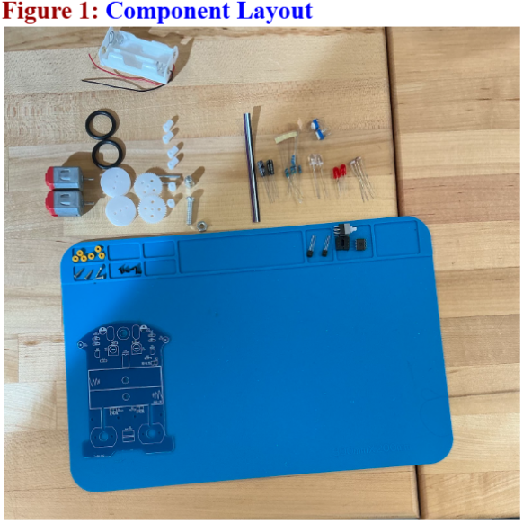
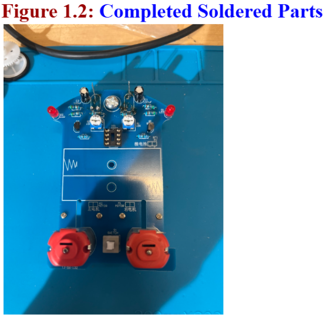
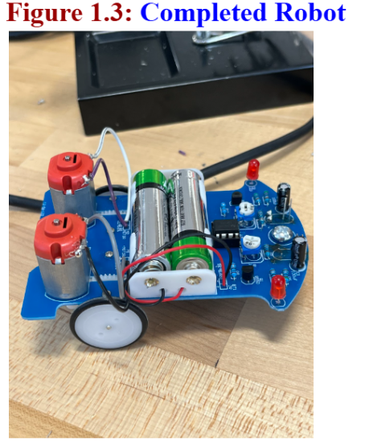

Before completing any of the steps to build the robot, it is important to lay out all the parts in an organized way so they are easy to find and access during the soldering process. Organizing the components ahead of time helps prevent losing small parts, reduces mistakes, and makes the assembly process faster and more efficient. By arranging the resistors, LEDs, capacitors, sensors, screws, and other components neatly on the workspace, you can quickly locate each part when it is needed for the correct step of the build. See Figure 1.

Step 1: Solder the resistors onto the board. Place two 50ohm resistors at R5, R6, R11, and R12, two 10ohm resistors at R9 and R10, and two 1kohm resistors at R7 and R8. Resistors control the flow of electrical current in the circuit and prevent too much current from reaching sensitive components such as LEDs and transistors. Step 2: Solder one DIP-8 IC socket at IC1. The socket holds the integrated circuit and allows it to be inserted or removed without directly soldering the chip to the board, which protects it from heat damage and makes replacement easier. Step 3: Solder two S8550 TO-92 transistors at Q1 and Q2. Transistors act as electronic switches or amplifiers. In this project they help control the motors by turning them on or off depending on signals from the sensors. Step 4: Solder two 5 mm red LEDs at D1 and D2. LEDs (Light Emitting Diodes) emit light when current flows through them and usually serve as indicator lights showing that the circuit has power or that certain parts are active. Step 5: Solder the electrolytic capacitors at C1 and C2, making sure the longer pin is the positive terminal and the shorter pin is the negative terminal. Capacitors temporarily store electrical energy and help stabilize the voltage in the circuit so the components run smoothly.

Step 6: Solder two CDS photoresistors at R13 and R14. This step was difficult because the space on the board was tight. The photoresistors also had to be positioned at a height of about 7 mm to work properly, so they were soldered from the back of the board. Photoresistors detect light by changing their resistance depending on how much light hits them. Step 7: Solder two 5 mm white LEDs at D4 and D5. These were also soldered from the back of the board, and their height had to be 14 mm. These LEDs act as light sources that help the photoresistors detect reflected light. Step 8: Attach the front support using one MS screw, one MS nut, and one M5 acorn nut. The front support helps stabilize the robot and keeps the board balanced. Step 9: Assemble the wheels onto the axles. This step was somewhat difficult because the parts were tight on the axles, but this tight fit is meant to keep the wheels secure so they do not slip during movement. Step 10: Install the JD3-100 DC motors at M1 and M2 and secure them with four D1.7 × 4 mm black screws. Attach two 5 mm worm gears to the motor shafts. The motors convert electrical energy into mechanical motion, which turns the gears and wheels so the robot can move.See Figure 1.2 and 1.3.
